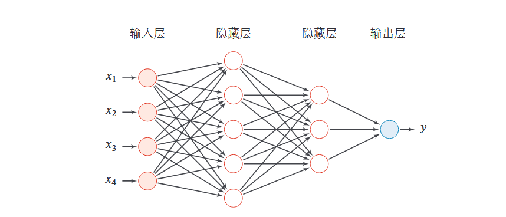
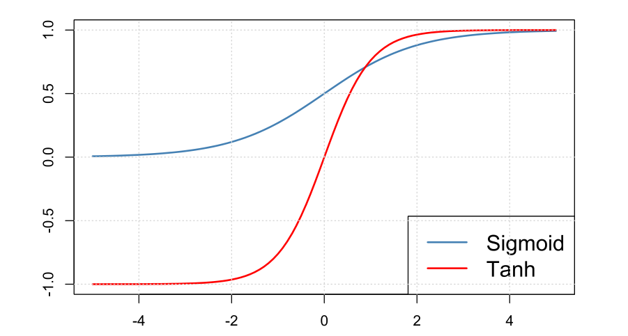
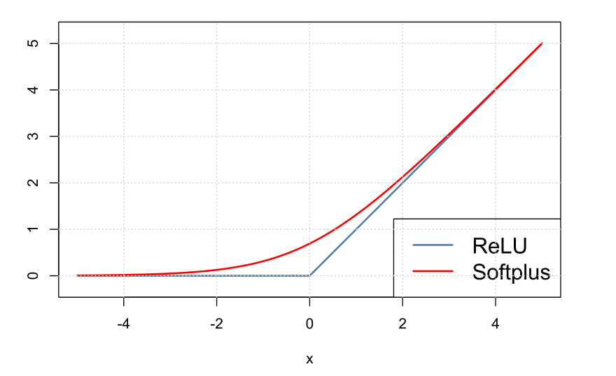
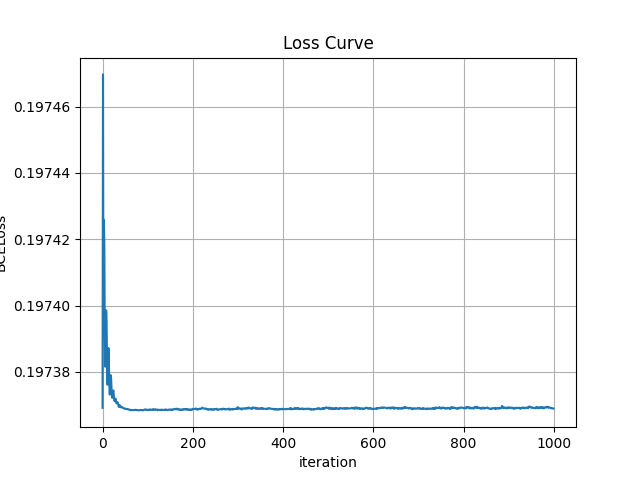

本期内容
- 前馈神经网络
- 自动微分与反向传播
- 使用Pytorch实现前馈神经网络
前馈神经网络
神经网络
之前我们提到机器学习四要素,即数据,模型,损失函数和优化方法.神经网络这个概念属于模型的范畴. 神经网络与传统机器学习最本质的区别在于它彻底摆脱了对人工特征工程的依赖。它通过端到端的学习方式，直接将原始数据映射到高维空间进行非线性变换，自动创造出符合数据内在规律的特征表达。这种能力让模型能够捕捉到人类经验难以设计的复杂模式，从而在表达能力上实现了对传统方法的降维打击。
简单来说就是神经网络拥有比传统机器学习模型更强的表达能力,但代价是需要更大的数据量以及模型黑箱.
前馈神经网络FNN
前馈神经网络是神经网络中最基础的结构，其核心机制在于通过多层非线性变换，实现对复杂函数的逼近。数据从输入层进入，经过隐藏层的逐层处理，最终在输出层产生结果，信息流呈单向传递，无反馈回路。
FNN结构图示如下:

核心计算单元
每一层网络的计算包含两个步骤，该过程在隐藏层中反复迭代：
-
线性映射（仿射变换）
- 公式：$z = W \cdot x + b$
- 作用：通过权重矩阵$W$和偏置向量$b$，将上一层的输出$x$进行加权求和，映射到新的空间。这一步实现了特征的升维或降维，捕捉数据中的线性关系。
-
非线性激活
- 公式：$a = \sigma(z)$
- 作用：引入非线性因素，使网络具备拟合复杂非线性函数的能力。若无此步骤，多层网络将退化为单层线性模型。
- 常用函数：ReLU（默认首选）、Sigmoid、Tanh。
网络架构
- 输入层：接收原始特征数据。
- 隐藏层：可包含多层，每层对数据进行特征提取与抽象，层数与神经元数量决定了模型的复杂度。
- 输出层：输出最终预测结果（如分类概率）。
常见激活函数
这里对一些常见的激活函数作介绍,激活函数的主要目的是为FNN注入非线性元素,否则根据线性代数的内容,多层线性映射完全可以用一层线性映射作等价代替.
Sigmoid (逻辑函数)
- 核心公式：$\sigma(x) = \frac{1}{1 + e^{-x}}$
- 输出范围：$(0, 1)$
- 简评：经典的平滑映射函数，曾广泛用于二分类输出。但在深层网络中易导致梯度消失，现较少作为隐藏层激活函数。
Tanh (双曲正切)
- 核心公式：$\tanh(x) = \frac{e^{x} - e^{-x}}{e^{x} + e^{-x}}$
- 输出范围：$(-1, 1)$
- 简评：零中心的Sigmoid变体，输出以0为对称点。在某些优化场景下比Sigmoid更稳定，但同样存在梯度消失风险。
下图展示了Sigmoid和Tanh函数的图像:

ReLU (线性整流单元)
- 核心公式：$\text{ReLU}(x) = \max(0, x)$
- 输出范围：$[0, +\infty)$
- 简评：现代深度学习的默认首选。计算极快，且在正区间梯度恒为1，能有效缓解梯度消失，加速深层网络收敛。
Softplus
- 核心公式：$\text{Softplus}(x) = \log(1 + e^{x})$
- 输出范围：$(0, +\infty)$
- 简评：ReLU的平滑近似版本，处处可导。虽然计算成本略高，但在需要平滑梯度的特定场景（如某些概率模型）中非常有用。
下图展示了ReLU和Softplus函数的图像:

有人问为什么不用Softplus代替ReLU,这主要是因为计算效率的问题,相较于Softplus函数要计算指数对数,ReLU函数的计算更加简单快速.
神经网络的理论基础
通用近似定理
通用近似定理是神经网络的基石，它从理论上证明了神经网络为什么有能力解决复杂问题，为深度学习的可行性提供了坚实的数学支撑。
定理核心内容 简单来说，这个定理告诉我们：只要一个神经网络包含至少一个隐藏层，并且该隐藏层拥有足够数量的神经元，同时使用了非线性的激活函数（比如 Sigmoid 或 ReLU），那么无论目标函数多么复杂（例如识别图片中的猫或理解自然语言），这个网络理论上都能以任意精度去拟合它。
这意味着，神经网络本质上是一个“万能函数拟合器”。只要数据中存在某种规律（即存在一个连续函数映射），不管这个规律看起来多么难以捉摸，只要我们的网络足够宽（神经元足够多），它就一定能学习并逼近这个规律。
深度的作用
通用近似定理虽然在数学上证明了单隐藏层神经网络的“万能性”，但在实际应用中，仅靠单层网络无法解决复杂问题。开发深层网络（深度学习）主要基于以下三个核心原因：
计算效率：深度比宽度更高效
- 指数级参数差异：虽然单层网络理论上能拟合任意函数，但对于复杂的函数，所需的神经元数量（宽度）可能随输入维度呈指数级增长，导致计算量无法承受。
- 参数经济性：深层网络通过增加层数（深度），利用层级结构，可以用远少于浅层网络的参数量来表达同样的复杂函数。
特征表达：层级化抽象
- 从简单到复杂：深层网络模拟了人类认知的层级结构。
- 浅层：提取边缘、纹理等简单局部特征。
- 深层：将简单特征组合成部件（如眼睛、车轮），最终组合成高级语义概念（如人脸、汽车）。
- 单层局限：单层网络试图直接从原始输入映射到输出，缺乏这种逐级抽象的能力，难以捕捉数据内在的结构化特征。
优化与泛化
- 寻找最优解：通用近似定理是“存在性定理”，只保证解存在，未说明如何找到。单层宽网络在训练时极难通过梯度下降找到那个完美的参数组合。
- 泛化能力：深层网络学到的层级特征往往具有更好的泛化能力，即在未见过的测试数据上表现更好，而不仅仅是死记硬背训练数据。
总结
通用近似定理解决了“能不能做”的问题（理论可行性），而深度学习解决了“能不能做好、做得快”的问题（工程实用性）。
自动微分与反向传播
自动微分
- 核心定义：计算机程序利用链式法则，对代码中的基本运算进行精确求导的技术。
- 作用：解决了复杂神经网络中手动推导数百万参数梯度的难题。它是现代深度学习框架的基石，让系统能自动生成梯度。
反向传播
- 核心定义：自动微分在神经网络中的具体应用算法，用于高效计算所有权重的梯度。
- 工作流程：先通过前向传播计算预测结果和误差；再从输出层开始，利用链式法则将误差信号逐层反向传递，算出每个参数的梯度以指导更新。
- 意义：精准量化了每个神经元对最终误差的贡献，是连接网络预测与参数优化的桥梁。
使用Pytorch实现前馈神经网络
代码框架
- 前向传播：输入数据 $x$，依次通过各层复合函数的计算，得到预测输出 $\hat{y}$。
- 计算损失：使用损失函数 $L(y, \hat{y})$ 评估预测值与真实标签 $y$ 之间的差距（例如基于极大似然推导出的交叉熵损失）。
- 反向传播 (Back-propagation)：计算损失函数对网络中每一层参数（$W^{(l)}$ 和 $b^{(l)}$）的偏导数（梯度）$\nabla_W L$。
- 参数更新：使用优化算法（如 SGD 和 Adam）更新参数：$W \leftarrow W - \eta \cdot \text{Optimizer}(\nabla_W L)$。
准备工作
准备数据
|
|
定义模型
|
|
设置损失函数与优化器
|
|
模型训练
|
|
最后展示训练损失函数下降图:
